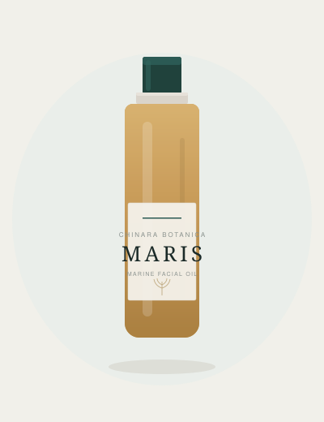
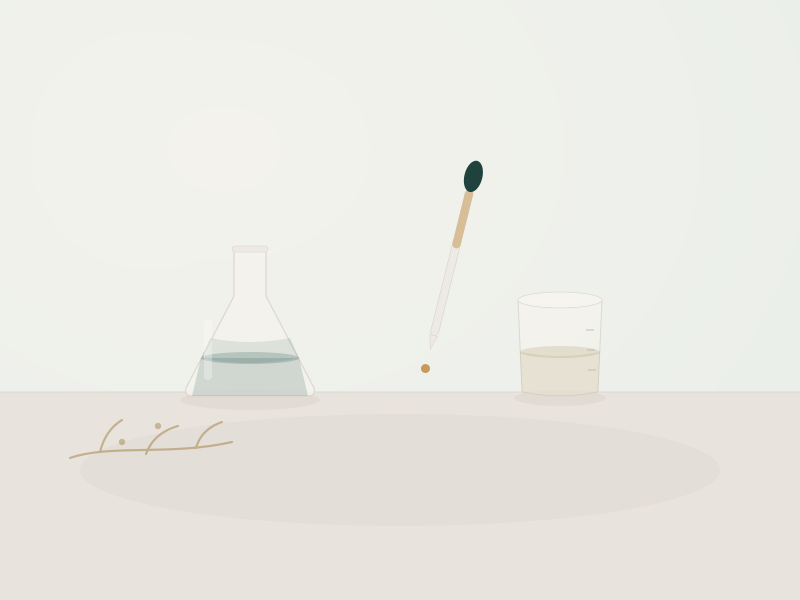

Marine Botanical Skincare
Chinara Botanica is a marine botanical skincare house, born from a quiet fascination with the sea. We begin with a single oil — MARIS — and the belief that skincare, done well, asks for less.
Discover MARIS
The Hero Oil
Marine Facial Oil · 30 ml · $92
Our first creation — and the first oil in the Marine Ritual Collection — a lightweight facial oil composed around marine-derived fucoxanthin, the golden carotenoid brown algae draws from sun and sea. Squalane, jojoba, and rosehip seed oil carry it; a little vitamin E keeps it fresh.
Its golden colour is never a dye — it is the natural hue of marine carotenoids. Weightless and dry to the touch, MARIS sinks in quietly to become the last, considered step of your day.
Draw a few drops. Warm them. Press into skin.
Why MARIS is Different
Squalane · Jojoba Seed Oil · Rosehip Seed Oil · Marine-derived Fucoxanthin · Tocopherol No added fragrance · No essential oils · Vegan & cruelty-free

The Story Behind MARIS
Long before MARIS was an oil, there was a long-standing fascination with the sea — and with brown algae in particular, a plant quietly gifted at protecting itself.
Years of scientific curiosity about that gift became, in time, a single oil — with fucoxanthin, the golden marine molecule at its heart, as the place where the wondering and the skincare meet.
Read our storyOur Philosophy
We formulate with marine botanicals and a light hand — choosing few ingredients, and choosing them well. Everything we make is designed for simplicity, for elegance, and for the quiet pleasure of a ritual you return to.
We formulate with what the ocean has perfected — led by brown algae, and the molecules it makes to endure.
Fewer ingredients, chosen with more care. Nothing added for volume, colour, or noise — only what belongs.
Skincare made to be kept, not chased — an unhurried moment, morning or night, that becomes your own.
Stay Close
We are only just beginning. Join us for occasional notes on marine botanicals, the making of the oil, and the quieter side of a skincare ritual. No noise.